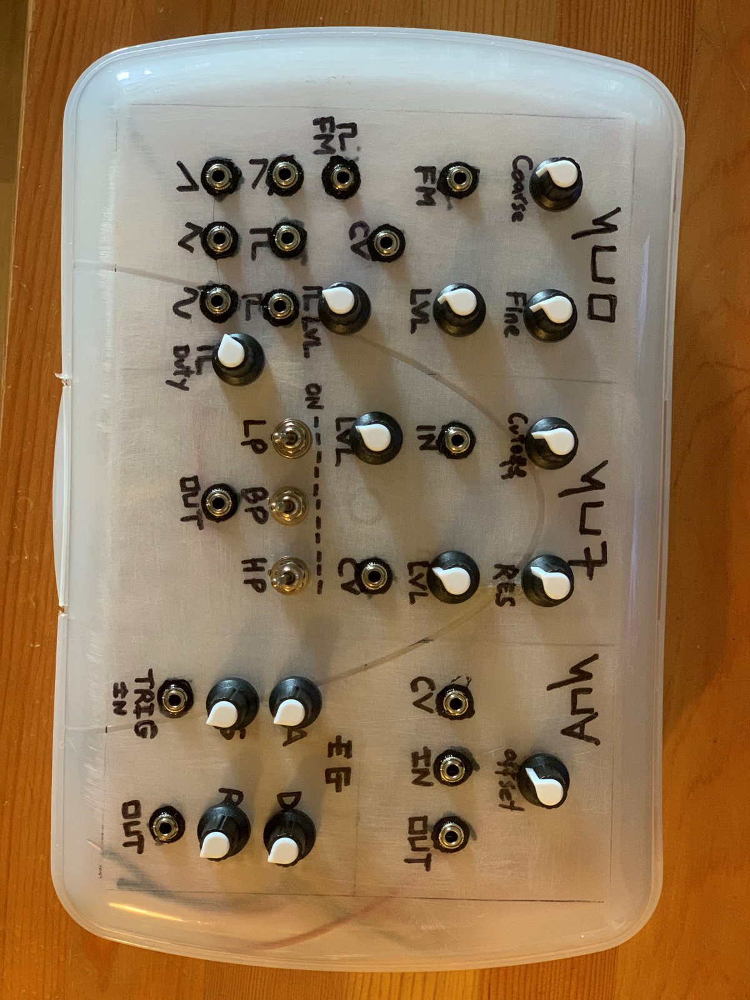
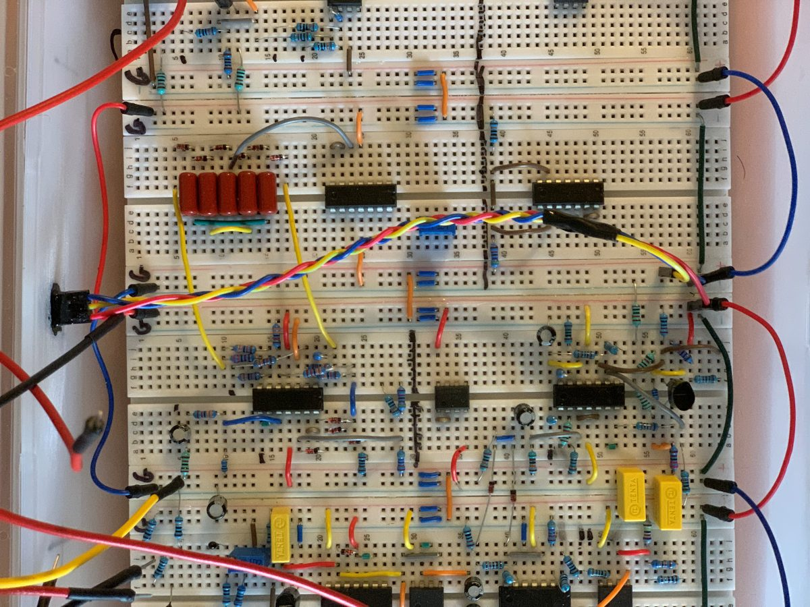

Six-waveform analog voice
The synthesizer was designed to generate sawtooth, square, pulse, reverse saw, triangle, and sine outputs from the oscillator section.
Saw
Square
Triangle
Cynth V.1 / Bachelor's thesis / Hardware synth
Cynth V.1 is my bachelor's thesis project: a voltage-controlled analog synthesizer built around a controller, VCO, VCF, VCA, envelope generator, and power supply.
The objective was a stable six-waveform instrument with 0-5V control, frequency modulation input, and a 12 dB/octave filter stage.
Overview
The project was positioned as a build-your-own instrument rather than a software simulation. The focus was hardware implementation, signal stability, and a modular structure that could be extended later.
The synthesizer was designed to generate sawtooth, square, pulse, reverse saw, triangle, and sine outputs from the oscillator section.
The controller stage provides independent outputs for pitch, gate, and modulation so each module can be driven directly.
The design includes low-pass, band-pass, and high-pass options, plus VCA and ADSR shaping for different presets and playing styles.
Architecture
The thesis presentation breaks the build into controller, oscillator, filter, amplifier, envelope generator, and power supply. That breakdown is the clearest way to understand the project.
Controller
Control voltage ranges from 0V to 5V, with separate outputs assigned to the other modules rather than one shared control line.
Oscillator
The VCO section includes coarse and fine tuning, modulation level control, and voltage input for pitch tracking.
Output chain
The signal path moves from VCO to VCF to VCA, with the envelope generator shaping the final response before output.
Build
Two reference views of the hardware build: the front panel layout and the breadboard prototype stage.

Controller, oscillator, filter, amplifier, and envelope controls on the assembled panel.

Early hardware stage used to validate the module behavior before final assembly.
Results
The reported outcome was a tuned synthesizer across the 0-5V range, a functioning filter stage with multiple modes, a working VCA, and an envelope generator capable of shaping plucks, pads, and bass-style presets.
Project material
The presentation is the cleanest public artifact for the project and documents the design stages, module breakdown, and final evaluation.